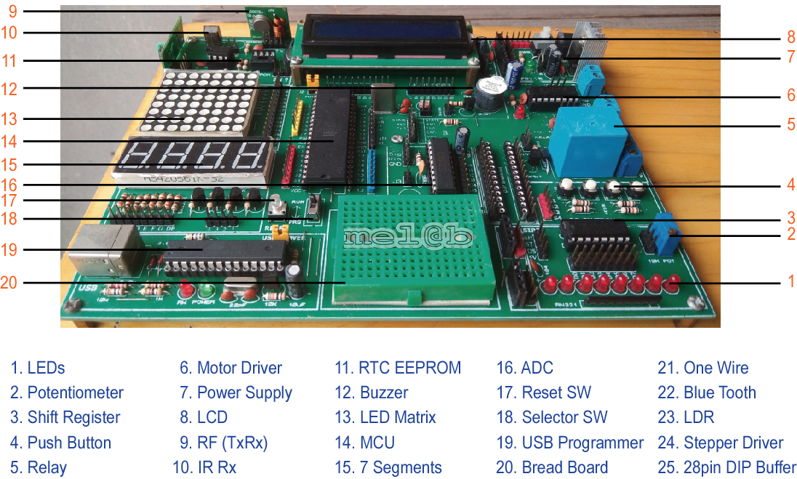

The Explore ATMEL PRO Kit comes with all the things required, not just for this experiment
but for the entire series. The base board is fully open, no peripheral is directly connected
to the MCU breakout board. You may connect any peripheral to any port/pin you wish. The kit
is fully open source, you may use the schematics, the design files and all of the source
code and build something cool on your own.
ATMEL PRO is simple but powerful board which uses the MCU AT89S52 from Atmel.
With its variety of interfaces this board is suitable for different embedded systems
applications.
The ATMEL PRO evaluation board supports all operating modes of the 8051 and
251 microcontrollers and lets you become familiar with the different modes of these devices.
Board Features
Fig: Dev Board Features
The story of the Kit does not end here. The kit ships with all the additional stuff mentioned below to get you started;
kickstart your embedded development. What are you waiting for?
DIP 40 Pin ZIF (Zero Insertion Force) Socket. For Easy Insert/Remove of IC.
8051 Development Board Support AT89S51, AT89S52, P89V51RD2, etc. 40-Pin DIP Chip.
USB Programmer can be used for both 8051 and AVR ICs.
On-Board 5 mm Power Plug-in DC Jack
On-Board 5V regulator (LM7805) and 3.3V regulator circuit.
On-Board Power ON-OFF switch and power indication RED LED.
On-Board 4 Input User Switches (pulled up internally).
On-board Quartz Crystal 11.05892 MHz
Port Extensions for all PORT with Detailed Pin Labeling for Easy Identification of Pin
External Pull-Up resistors for Port 0
On-board Reset button
Dimensions: 120x38 mm (4.7x1.5")
Package Content
ATMEL PRO Evaluation Board.
ATMEL PRO Evaluation Board User’s Guide (this manual),
Power Adapter (12v 1a External)
Motor (DC and Stepper)
Keypad Matrix (Membrane Type)
Connectors (M2M, M2F, F2F)
Softcopy CD( MIDE-51, PROTEUS, PICKIT2, Data sheets and Notes.).